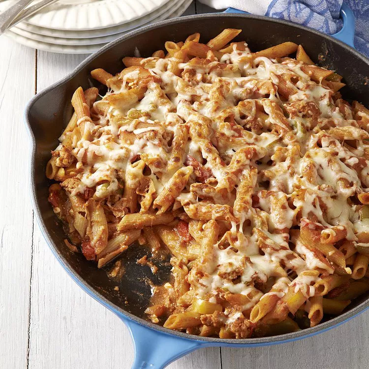

Ziti With Sausage and Peppers

Description
This easy recipe is sure to please and nourish the whole family. The nutrition is off the charts.
Its easy to make to boot.
Ingredients
- 8 oz of whole wheat ziti
- 16 oz bag of frozen pepper and onion mix
- 6 oz of turkey sausgae crumbled
- 2 8 oz cans of tomato sauce
- 1 tsp garlic powder
- 1 tsp dried oregano
- 0.25 tsp of salt
- 0.5 cup of cottage cheese
- 0.75 cup of italian blend shredded cheese
Steps
- Cook pasta in a pot of boiling water according to package directions
- Meanwhile, heat a large ovenproof skillet over medium-high heat. Add frozen
vegetables and sausage; cook, stirring occasionally, until most of the liquid from the
vegetables has evaporated, 10 to 15 minutes.
- Position rack in upper third of oven; preheat broiler.
- Stir tomato sauce, garlic powder, oregano and salt into the skillet. Reduce heat to
medium-low; stir in cottage cheese and the pasta. Cook, stirring, until heated
through, about 2 minutes. Top with shredded cheese.
- Place the skillet under the broiler to brown the cheese, 1 to 2 minutes.
Source: Eating Well